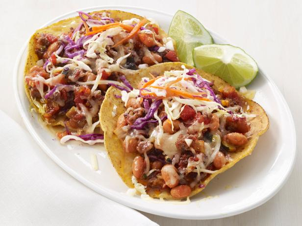
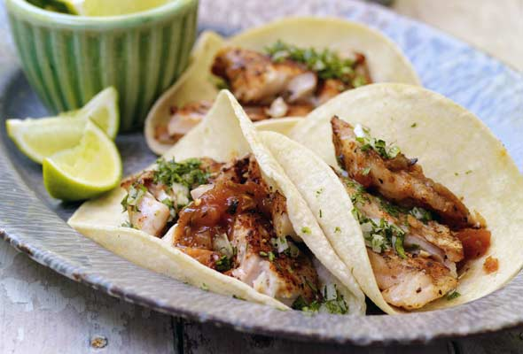
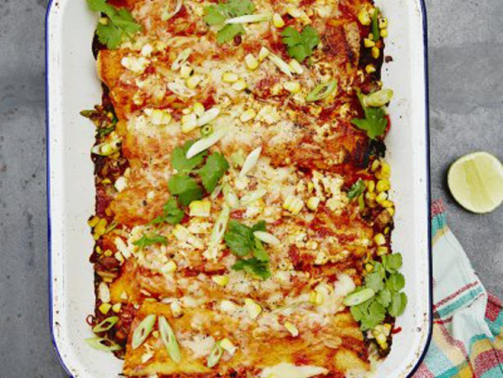

Course Meals
Chipotle Beef Tostada

Ingredients
- 2tablespoons vegetable oil
- 1pound ground beef chuck
- 1large white onion, minced Kosher salt
- 1to 1 1/2 teaspoons chipotle chile powder
- 110-ounce can Mexican-style diced tomatoes with green chiles
- 115-ounce can pinto beans, drained
- 1medium zucchini or yellow squash, diced
- 2cups coleslaw mix or shredded cabbage
- Jice of 1 lime, plus lime wedges for serving Freshly ground pepper
- 8tostadas (flat crisp tortillas) or taco shells
- 11/2 cups shredded cheddar cheese (about 4 ounces)
Instructions
Heat the vegetable oil in a large skillet over medium-high heat. Add the ground beef, half of the minced onion, 1 teaspoon salt and the chipotle chile powder. Cook, stirring and breaking up the meat with a wooden spoon, until the meat is browned and the
onion is tender, about 7 minutes. Add the tomatoes, beans and zucchini and cook, stirring occasionally. Until the zucchini is just tender, about 6 minutes. Meanwhile, toss the coleslaw mix, lime juice, and salt and pepper to taste in a bowl. Divide
the tostadas among plates and spoon the beef mixture on top. Top with the cheese, slaw and the remaining minced onion. Serve with lime wedges.
Grilled Huanchinango Tacos

Ingredients
- 12 corn tortillas
- 1 medium sweet onion, finely chopped
- 1 bunch cilantro, finely chopped
- 1 4 cup fresh lime juice
- S lt and freshly ground black pepper
- 2 pounds red snapper fillets
- 2 teaspoons chili powder
- 2 teaspoons paprika
- 2 teaspoons dried oregano
- S ray cooking oil
- 4 limes, quartered, for serving
- S ore-bought or homemade hot sauce, for serving
Instructions
Wrap the tortillas in aluminum foil, in 3 packages of 4 tortillas each, and set aside. In a medium bowl, mix together the chopped onion, cilantro, and lime juice. Season with salt and pepper to taste. Set aside, or cover and refrigerate for up to 4 hours.
Prepare enough coals for a hot charcoal fire, or preheat your gas grill on high for 10 minutes with the lid closed. While the grill is heating up, season the tops of the snapper fillets with the chili powder, paprika, oregano, and a sprinkling of salt
and pepper. Place the tortilla packages in the oven and set it at 250°F (120°C). When the coals are ready or the gas grill is hot, liberally spray the skin side of each snapper fillet with cooking oil. Place on the grate, skin side down, and grill for
4 minutes, until the skin is golden brown and a crust has formed. Spray the top of each fillet with more cooking oil and gently turn them over. Grill for 4 to 5 minutes more, until the center is just cooked through. Transfer the snapper fillets to a
cutting board, and cut them into quarters. Put on a serving table with the warm tortillas, onion-cilantro mixture, quartered limes, and hot sauce, and let people assemble their own tacos.
Veggie Enchiladas

Ingredients
- 2 red or yellow peppers
- 2 corn on the cob olive oil
- 1 x 400 tin g black beans
- ½ teaspoon ground cumin
- 6 spring onions
- 1 bunch fresh coriander
- 1 lime
- 2 cloves garlic
- 1 x 400 tin g plum tomatoes
- 8 small corn tortillas 40 g feta cheese
Instructions
1.Preheat the oven to 200ºC/400ºF/gas 6. Place a griddle pan over a high heat to get smoking hot. Halve and deseed the peppers, then add to the griddle with the corn. Grill for 8 to 10 minutes, or until charred and bar-marked, turning occasionally. Remove
to a plate to cool.
2.Meanwhile, heat 1 tablespoon of oil in a medium frying pan over a medium heat. Drain and add the black beans, stir in the cumin and fry for 4 to 5 minutes, or until crisp, stirring occasionally.
3.Once cooled, cut the corn kernels away from the cob and chop the peppers into 1.5cm chunks. Reserving 1 tablespoon of the corn, add to a large bowl with the peppers and black beans. Trim, finely slice and add the spring onions, reserving a small
handful to one side. Deseed, finely slice and add the chilli. Pick and add most of the coriander leaves, reserving the stalks. Squeeze in the juice of the lime and season well with sea salt and freshly ground black pepper.
4.Wipe the frying pan clean with kitchen paper, then return to a medium heat with 1 tablespoon of oil. Peel and finely slice the garlic and finely slice the coriander stalks, then add to the pan for 1 minute. Stir in the tomatoes and ½ a tin’s
worth of hot water, breaking up the tomatoes with the back of a wooden spoon. Bring to the boil, reduce the heat to medium-low and simmer for 5 minutes, or until thickened and reduced. Season to taste, carefully transfer to a liquidiser and blitz until
smooth.
5.Divide the vegetable mixture between 8 corn tortillas and roll them up. Line them up in a snug-fitting baking dish (roughly 20cm x 30cm), with the scruffy ends tucked underneath. Pour over the tomato sauce, coarsely grate the Cheddar on top and
crumble over the feta.
6.Drizzle with a little oil, then pop in the hot oven for 25 minutes, or until bubbling and golden. Serve scattered with the reserved corn, spring onion and coriander leaves. Delicious with a crisp green salad.